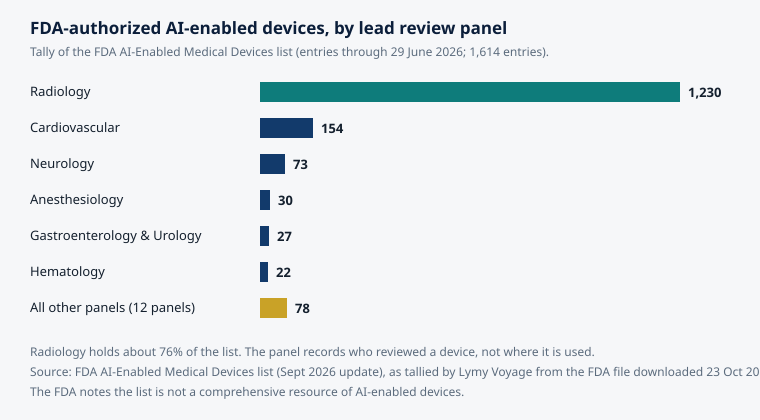

Article 55 · Diagnostic.X · AGI Future Foundation
How Do You Know a Diagnostic Tool Works? Sensitivity, Specificity, and What a Number Hides
Here is what is true. Diagnostic.X is Series 3 in the April 2026 internal list of 33 named W3 sub-series, and the AGI Future Foundation — the steward of the W3 plan — describes it on its site as AI diagnostics governed by a safety mandate. The Foundation itself is a filed California Nonprofit Public Benefit Corporation, Entity No. B20260196664, with Articles filed on 2026-04-24. The U.S. Food and Drug Administration maintains a public list of AI-enabled medical devices authorized for marketing in the United States; as of its September 2026 update, that list holds 1,614 entries.
Chart: FDA-authorized AI-enabled medical devices by lead review panel, from the FDA's AI-Enabled Medical Devices list (entries through 29 June 2026; 1,614 entries). Source: FDA list, as tallied by Lymy Voyage from the FDA file downloaded 23 October 2026. The panel records who reviewed a device, not where it is used, and the FDA notes the list is not comprehensive.
What is true, and what is not
That skill matters more now than it did a decade ago, because the number of tools making diagnostic claims has exploded while the public's ability to check those claims has not kept up. The FDA's list is the clearest evidence of the scale: 1,614 AI-enabled devices authorized for marketing, most of them in radiology, most of them cleared through a pathway that compares a new device with one already on sale rather than proving it from scratch. "FDA-authorized" and "proven to help patients" are different statements, and the gap between them is exactly where careful evaluation lives.
The four squares
Every diagnostic test, from a blood assay to a deep-learning model reading a scan, can be described with a single table. It has two columns — the person truly has the condition, or truly does not — and two rows — the test says positive, or the test says negative. That gives four cells, and every person tested falls into exactly one of them:
- True positive (TP): the person has the condition, and the test says so. The test was right.
- False positive (FP): the person does not have the condition, and the test says they do. The test cried wolf.
- False negative (FN): the person has the condition, and the test says they do not. The test missed a case.
- True negative (TN): the person does not have the condition, and the test says so. The test was right.
That is the whole machinery. Everything else in this article — sensitivity, specificity, predictive values, likelihood ratios, ROC curves — is arithmetic on those four numbers, and every one of those measures answers a different question about them. The most common error in reading diagnostic claims is treating them as if they all answered the same question. A test is never simply "accurate": it is accurate in two different directions, and it can be excellent in one and poor in the other. A test that flags everyone as positive never misses a case, and a test that flags no one never raises a false alarm. Both are useless. The balance between the two directions is a choice about which kind of error matters more, for which people, in which setting — and that choice is made by picking a threshold, where the clinical judgement lives.
Sensitivity and specificity: the test's own properties
Sensitivity is the proportion of people with the condition whom the test correctly identifies as positive: TP divided by (TP + FN). A test with 95% sensitivity misses 5% of cases. A highly sensitive test rarely misses a true case — which is why sensitivity is the property screening tests need most.
Specificity is the proportion of people without the condition whom the test correctly identifies as negative: TN divided by (TN + FP). A test with 90% specificity gives a positive result to 10% of healthy people. A highly specific test rarely produces a false alarm — which is why specificity is the property a diagnostic test needs most.
Sensitivity and specificity are a pair. As the standard biostatistics teaching puts it, a test cannot be evaluated by stating only one of them. A test with 99% sensitivity and 50% specificity catches nearly every case and also flags half of all healthy people; in a screening population, that second number determines whether the programme collapses under false positives. Either number alone is a sales pitch. Together, they are the beginning of an evaluation.
Two properties of sensitivity and specificity matter for reading claims. First, they are, in principle, properties of the test itself — they describe how the test performs among people whose disease status is already known, and they do not depend directly on how common the disease is. Second, they are not fixed constants. They vary with the chosen cut-off, with disease severity, with patient selection, with the clinical setting, and with the reference standard. A sensitivity measured on severe, textbook cases in a specialist clinic will not be the sensitivity observed on early, ambiguous cases in primary care — and a claim that quotes the first number while the tool will be used in the second setting is quoting the wrong number.
The standard reference on these definitions, Hazra and Gogtay's Biostatistics Series Module 7: The Statistics of Diagnostic Tests (Indian Journal of Dermatology, 2017), states the point plainly: the performance of diagnostic tests should be evaluated on indices such as sensitivity, specificity, positive predictive value, and negative predictive value, and likelihood ratios combine sensitivity and specificity to express how much a given result changes the likelihood of disease. The full module is freely available.
Predictive values: the question the patient actually asks
Sensitivity and specificity answer questions asked from the test's point of view: given that we know whether the person has the condition, how often is the test right? But a clinician and a patient ask the question the other way round: given that the test says positive, how likely is it that the person actually has the condition? That is the positive predictive value. And given that the test says negative, how likely is it that the person is truly free of the condition? That is the negative predictive value.
Positive predictive value (PPV) is TP divided by (TP + FP): of everyone the test flagged, how many truly have the condition. Negative predictive value (NPV) is TN divided by (TN + FN): of everyone the test cleared, how many truly do not have the condition. These are the numbers that describe what a result means to the person who received it — and they depend heavily on how common the condition is in the population being tested. That dependence is the single most important fact in this article, and it is worth working through with real arithmetic.
Take an illustrative calculation — not a real test, but arithmetic anyone can check. Suppose a test has 90% sensitivity and 95% specificity. Now use it on 10,000 people in a population where 1% have the condition: 100 people truly have it, 9,900 do not. The test catches 90 of the 100 cases and misses 10. Among the 9,900 without the condition, it correctly clears 9,405 and falsely flags 495. So the test produces 585 positive results, of which only 90 are true positives. The positive predictive value is 90 divided by 585 — about 15%. A person who tests positive on this good test, in this population, has roughly a one-in-seven chance of actually having the condition.
Now use the same test, with the same sensitivity and specificity, in a clinic where half the people tested have the condition: 5,000 with it, 5,000 without. It catches 4,500 cases and falsely flags 250 healthy people. The PPV is 4,500 divided by 4,750 — about 95%. Same test, same numbers, utterly different meaning. The difference is prevalence.
This is why a diagnostic claim validated in a specialist clinic cannot simply be carried into a screening population, and why the companion article in this series — on the line between screening and diagnosis — treats the population shift as the most predictable failure in the field. A test that is honest in a clinic where the condition is common becomes misleading in a general population where it is rare, without any change in the test itself. The arithmetic does not care about the quality of the engineering. Never accept a sensitivity and specificity without asking in whom they were measured, and never accept a predictive value without asking in what population. A PPV without a prevalence is a number without a context, and a context is what makes it true or false.
Thresholds, ROC curves, and the price of certainty
Most diagnostic tests do not naturally produce a yes or a no. They produce a number — a score, a probability, a measurement — and someone has to choose the point above which the test counts as positive. That choice is the threshold, and moving it trades one kind of error for the other. Lower the threshold and the test catches more cases (sensitivity rises) but also flags more healthy people (specificity falls). Raise it and the false alarms shrink, but so does the catch. There is no threshold that makes both errors vanish. There is only a choice about which error to accept more of, and that choice should be a clinical decision, stated in writing, not a default buried in the software.
The receiver operating characteristic (ROC) curve is the picture of that trade-off. It plots sensitivity against one minus specificity for every possible threshold, from the most permissive to the strictest. A test that guesses at random traces a diagonal line. A perfect test hugs the top-left corner. A real test traces a curve between the two, and the area under that curve — the AUC, a number between 0.5 (coin flip) and 1.0 (perfect) — summarizes how well the test separates people with the condition from people without it, across all thresholds at once.
The AUC is the single number most often quoted for diagnostic AI, and it is also one of the most often misread. An AUC of 0.90 sounds excellent, and as a measure of ranking — how often the test scores a randomly chosen person with the condition higher than a randomly chosen person without it — it is excellent. But ranking is not the same as deciding. A test with a high AUC can still be useless at the threshold where it will actually be used, if that threshold produces too many false positives for the clinic to absorb or misses too many cases to be safe. The AUC describes the curve. The threshold describes the practice. A claim that quotes an AUC without naming the operating threshold, and the sensitivity and specificity at that threshold, has described the instrument without describing its use. There is a second problem: the AUC is a property of a test on a dataset, and datasets flatter. A model evaluated on data that resembles its training data will look better than the same model evaluated somewhere new.
Likelihood ratios: the clinician's shortcut
There is one more measure worth knowing, because it is the one clinicians actually use at the bedside. The likelihood ratio combines sensitivity and specificity into a single statement about how much a test result should change a clinician's mind. The positive likelihood ratio (LR+) is sensitivity divided by (1 − specificity): how much more likely a positive result is in a person with the condition than in a person without it. The negative likelihood ratio (LR−) is (1 − sensitivity) divided by specificity. A test with 90% sensitivity and 95% specificity has an LR+ of 18 and an LR− of about 0.11.
The practical use is Bayesian: take the clinician's estimate of the probability of the condition before the test, convert it to odds, multiply by the likelihood ratio, and convert back. The result is the post-test probability — the number the clinician actually needs. A test should be ordered only if its result can move the probability across a decision threshold: above the point where treatment or further investigation is warranted, or below the point where the condition can be ruled out. A test whose result cannot move the decision, however accurate, is a test that should not have been ordered — and a screening programme built on such a test generates information without generating decisions.
What a number hides: five traps
Accuracy numbers are honest only when the study behind them is honest, and diagnostic accuracy studies have a well-known set of traps. Each has a name in the literature, and each has caught real tools — including famous ones. None of these traps requires dishonesty. All of them are compatible with sincere, competent work. That is what makes them dangerous: a team can fall into every one of them while believing it has built a good test, and the numbers it publishes will be, in a narrow sense, true — true of the study, false of the world.
Spectrum bias. Sensitivity and specificity vary with disease severity and with the mix of patients studied. A test evaluated on severe, obvious cases and clearly healthy controls will look far better than the same test evaluated on the early, ambiguous cases where it would actually be used. This is the most common way a diagnostic claim is inflated without anyone lying: the study population is simply easier than the real population. The defence is to demand that the evaluation population resemble the intended-use population — same setting, same spectrum of severity, same borderline cases.
Verification bias. The index test is compared with a reference standard, but if the reference standard is applied selectively — for example, only to people who tested positive, because confirming a negative result is expensive — then the study cannot see its own false negatives, and sensitivity is overestimated. The defence is to ask whether everyone in the study received the reference standard.
An imperfect reference standard. Sometimes the "gold standard" is itself imperfect — a human reader who disagrees with colleagues, a definition of the disease that is contested. When the reference standard is wrong, the new test is blamed for disagreeing with it, and a genuinely better test can look worse than the flawed standard it is measured against. The defence is to ask what the reference standard was and whether it was applied blind to the index test's result.
Single-site validation and drift. A model validated at the hospital where it was built, on data from the same scanners and the same patient population, has not been validated for anywhere else. Performance drops when the setting changes and drifts further over time as practice changes. The defence is external validation — testing on data the developers never saw, from places they never worked — and monitoring after deployment.
The threshold that moved. A study reports an AUC, or a sensitivity and specificity at a threshold chosen after the results were seen — the threshold that makes the numbers look best. That is not a validation; it is a description of the best case. The defence is to ask whether the threshold was pre-specified before the evaluation.
The case study: a famous model, checked properly
The clearest public example of what happens when a widely deployed tool is finally checked independently is the Epic Sepsis Model. Epic Systems, whose electronic health record software is used by a large share of US hospitals, built a sepsis prediction model into its system to give early warning of sepsis in hospitalized patients. The model was running in hundreds of hospitals, and the only performance figures available were Epic's own internal documentation.
In June 2021, researchers at the University of Michigan published an independent external validation in JAMA Internal Medicine (Wong et al., doi:10.1001/jamainternmed.2021.2626). They studied 27,697 patients and 38,455 hospitalizations at Michigan Medicine between December 2018 and October 2019. The model's hospitalization-level AUC was 0.63 — against the 0.76 to 0.83 range Epic had reported in internal documentation. At a score threshold of 6, within Epic's recommended range, sensitivity was 33% and positive predictive value was 12%: the model did not identify 1,709 patients with sepsis (67%) despite generating alerts for 6,971 of all 38,455 hospitalized patients (18%). Of the 2,552 patients with sepsis, the model flagged only 183 (7%) who had not already received timely antibiotics — the cases a clinician had not already acted on. The authors concluded the model had poor discrimination and calibration at the hospitalization level, and that its alerts created a large burden of alert fatigue.
The lesson is not that the Epic Sepsis Model was uniquely bad. It is that deployment preceded independent evaluation, and that the evaluation, when it finally came, measured the tool as it would actually be used rather than as it had been developed. That order — deploy first, check later — is the pattern to watch for in every diagnostic AI claim, and it is the pattern a serious evaluation regime exists to prevent.
The regulatory landscape: what "FDA-authorized" does and does not mean
The regulatory picture is the frame in which all of this sits, and it is widely misunderstood. In the United States, software that diagnoses or supports diagnosis is a medical device, regulated by the Food and Drug Administration. The FDA maintains a public list of AI-enabled medical devices authorized for marketing. As of the list's September 2026 update, it holds 1,614 entries, from a Pap smear screener cleared in September 1995 to devices cleared on 29 June 2026, and the FDA itself cautions that the list is not a comprehensive resource of AI-enabled devices.

The shape of that list is instructive. A tally of the FDA file counts 1,230 of the 1,614 devices — about 76% — under the radiology review panel, with cardiovascular a distant second at 154 and neurology third at 73. That is not a picture of AI transforming all of medicine equally. It is a picture of AI doing, overwhelmingly, one thing: reading, sorting, or improving medical images. The chart below shows the distribution.
The list also contains almost no autonomous diagnostic systems. The notable exception is the one that proves the rule: IDx-DR, now LumineticsCore, authorized by the FDA in April 2018 through the De Novo pathway as the first device to provide a screening decision without the need for a clinician to interpret the image or results. In its pivotal trial — 900 patients with diabetes at ten primary care sites — the system correctly identified more than mild diabetic retinopathy 87.4% of the time and correctly identified those without it 89.5% of the time, according to the FDA's announcement; the peer-reviewed trial reported sensitivity of 87.2% and specificity of 90.7%. Those are the numbers of a real, prospective, pre-registered trial with a locked algorithm, a defined population, and explicit exclusions — the standard against which other diagnostic AI claims should be measured, and the standard most of them have not met. Note the word the FDA itself used: the device provides a screening decision. Even the one autonomous system in the field is framed, by its regulator, as screening, not as a replacement for diagnosis.
A checklist for reading any accuracy claim
Put these questions to any diagnostic tool — a product page, a press release, a pitch deck, a published paper — and the quality of the answers will tell you most of what you need to know.
- What is the reference standard, and was it applied to everyone? If the study only confirmed the people who tested positive, its sensitivity is a guess.
- In whom was it measured? Same setting, same severity spectrum, same borderline cases as the intended use — or an easier population?
- Was the threshold pre-specified? A threshold chosen after seeing the results is a best case, not a validation.
- What are the sensitivity and specificity at the operating threshold? An AUC without an operating point describes the instrument, not its use.
- What is the predictive value in the population where it will be used? A PPV from a specialist clinic does not travel to a screening population.
- Was it validated externally, on data the developers never saw? Internal validation is a starting point, not evidence of generalizability.
- In whom does it perform worst? By age, sex, ethnicity, device, site, and input quality. A tool that cannot answer this has not looked.
- What happens after deployment? Who monitors performance, how often, and who can pause the tool when it drifts?
- Does the claim match the authorization? "FDA-cleared" through 510(k) is not "proven to improve outcomes." Read the authorized intended use, not the marketing copy.
- Does the result change a decision? A test whose result cannot move a clinician across a decision threshold is information without use.
A tool that answers all ten clearly is a tool that has been evaluated seriously. A tool that answers none of them is a tool that is asking to be trusted on the strength of a single number — and a single number, as this article has shown, can hide almost anything.
The measures, side by side
| Measure | Formula | Question it answers | Depends on prevalence? |
|---|---|---|---|
| Sensitivity | TP / (TP + FN) | Of people with the condition, how many did the test catch? | No |
| Specificity | TN / (TN + FP) | Of people without the condition, how many did the test clear? | No |
| Positive predictive value | TP / (TP + FP) | Given a positive result, how likely is the condition present? | Yes |
| Negative predictive value | TN / (TN + FN) | Given a negative result, how likely is the condition absent? | Yes |
| Positive likelihood ratio | Sensitivity / (1 − Specificity) | How much more likely is a positive result with the condition than without it? | No |
| Negative likelihood ratio | (1 − Sensitivity) / Specificity | How much more likely is a negative result with the condition than without it? | No |
| AUC | Area under the ROC curve | Across all thresholds, how well does the test rank people with the condition above those without it? | No |
What this means for Diagnostic.X
Diagnostic.X, as proposed, has no numbers at all — and that is, for now, the honest position. The series is Series 3 in the April 2026 internal list of 33 named W3 sub-series, and the Foundation site describes it as AI diagnostics governed by a safety mandate. That description is site copy, not a filing and not evidence of a working system. The verified record is narrow: the name and number, the published direction, and an anchored metaverse world at 5.343, 101.566 whose fabric definition is published but whose assets are not yet hosted, so it does not render fully.
What would have to exist before Diagnostic.X could be evaluated by the standards in this article is a specific list: a written scope naming the first use, user, and population; a pre-specified threshold, with sensitivity and specificity at that threshold published; a reference standard applied to everyone evaluated; external validation on data the developers never saw; a published analysis of performance in the subgroups where it is worst; and a monitoring plan with a named human owner and the authority to pause the tool. None of those exists in a verified document today. Until they do, any accuracy figure attached to the name Diagnostic.X would be invented, and this article will not invent one.
The Foundation's planned governance is relevant to that list, because evaluation is ultimately a governance discipline rather than a statistical one. In the intended model, each series would be DAO-managed day to day, with a human Steward Council deciding everything that carries legal, financial, or clinical consequence, and agents supporting and never deciding. The Foundation's own article on Diagnostic.X describes an Alignment Evaluation Gate — pre-registered thresholds, an independent judge, separation of powers — whose job is to refuse to ship a model that fails its pre-registered safety evaluation. That gate is described on the Foundation site as a proposed system with no live feed claimed, and this article does not claim it is operating. But the idea it encodes is exactly the discipline this article has argued for: thresholds set in advance, judged by someone other than the team that built the model, with the power to say no.
The Foundation's fundraising, as filed, is donation and grant only. Nothing in this article offers securities, and no price, terms, or return is promised. Readers who want to support the Foundation's work — including the slow, unglamorous work of building evaluation discipline before any tool is built — can find the Foundation at agifuturefoundation.org. Donations are not claimed to be tax-deductible: no IRS 501(c)(3) determination letter is on file for the Foundation.
Glossary
True positive / false positive / false negative / true negative — The four cells of the diagnostic table: the test was right twice (TP, TN) and wrong twice (FP, FN).
Sensitivity — TP / (TP + FN). The proportion of people with the condition the test catches.
Specificity — TN / (TN + FP). The proportion of people without the condition the test clears.
Positive predictive value (PPV) — TP / (TP + FP). Given a positive result, the probability the condition is present. Depends on prevalence.
Negative predictive value (NPV) — TN / (TN + FN). Given a negative result, the probability the condition is absent. Depends on prevalence.
Likelihood ratio — How much a test result changes the odds of the condition. LR+ for a positive result, LR− for a negative one.
ROC curve / AUC — The ROC curve plots sensitivity against (1 − specificity) across all thresholds. The area under it (AUC) runs from 0.5 (coin flip) to 1.0 (perfect) and summarizes ranking ability across thresholds.
Pre-test probability — The clinician's estimate of the probability of the condition before the test, from history, examination, and context.
External validation — Testing a model on data from sites and populations it was not developed on.
Frequently asked questions
"Accuracy" — the proportion of all results that are correct — is the least informative measure in this article, because it mixes the two kinds of error and hides the effect of prevalence. A test can be 99% accurate overall in a population where the condition is rare simply by calling almost everyone negative.
An AUC of 0.5 is a coin flip and 1.0 is perfect; in practice, 0.7–0.8 is modest, 0.8–0.9 is good, and above 0.9 is excellent as a ranking measure. But ranking is not deciding. Always ask for the sensitivity and specificity at the operating threshold, and whether that threshold was pre-specified.
It means the device met the FDA's applicable premarket requirements for its authorized intended use, including a focused review of safety and effectiveness. Most AI-enabled devices are cleared through 510(k) by showing substantial equivalence to an existing device. That is not proof that the device improves patient outcomes, and the authorized intended use — not the marketing copy — is what the clearance covers.
References
- Hazra A, Gogtay N. Biostatistics Series Module 7: The Statistics of Diagnostic Tests. Indian Journal of Dermatology. 2017;62(1):18–24. PMC5286748.
- Diagnostic tests: sensitivity, specificity and predictive values. ECG Waves. ecgwaves.com.
- U.S. Food and Drug Administration. List of Artificial Intelligence-Enabled Medical Devices. Updated 4 September 2026. FDA.
- Wong A, et al. External Validation of a Widely Implemented Proprietary Sepsis Prediction Model in Hospitalized Patients. JAMA Internal Medicine. 2021. doi:10.1001/jamainternmed.2021.2626.
- U.S. Food and Drug Administration. FDA permits marketing of artificial intelligence-based device to detect certain diabetes-related eye problems. Press announcement, 11 April 2018. FDA.
- Lymy Voyage. FDA Approved AI Medical Devices: 1,614 Listed, 76% Radiology. Tally of the FDA AI-Enabled Medical Devices file downloaded 23 October 2026. lymyvoyage.com.
- AGI Future Foundation. Diagnostic.X — AI Diagnostics Governed by a Safety Mandate. agifuturefoundation.org.
Status note: Diagnostic.X (W3 Series 3) is a proposed series in the April 2026 internal list of 33 named W3 sub-series. It is not formed, funded, or offered. The AGI Future Foundation is a California Nonprofit Public Benefit Corporation, Entity No. B20260196664, Articles filed 2026-04-24. No IRS 501(c)(3) determination letter is on file, and donations are not claimed to be tax-deductible. Nothing in this article is medical advice, a diagnosis, or a recommendation about any test or treatment. If you have a health concern, consult a qualified clinician.